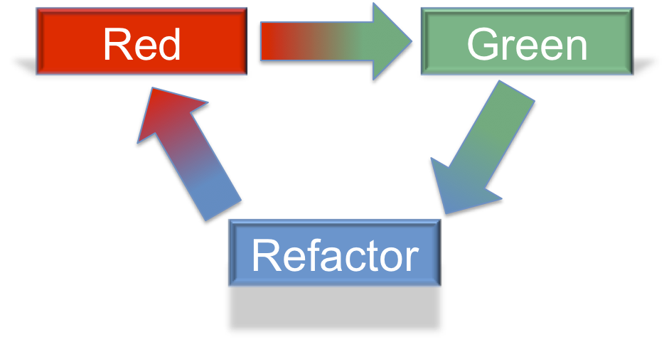
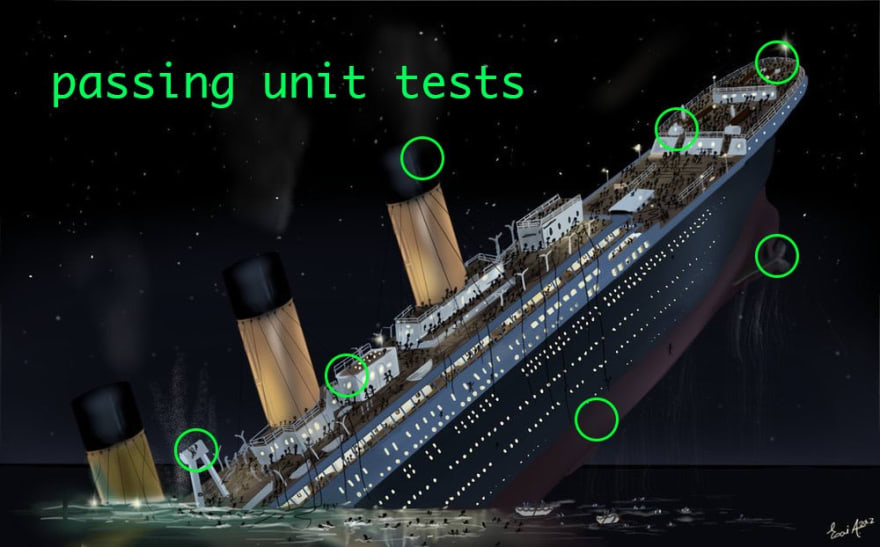

## Unit Testing </br> #### Key topics for tonight <div style="text-align: left;"> - Unit Testing in C# </br> - What makes a Unit Test <span style="font-style: italic;">good</span>? </br> - Other common Unit Testing Libraries </br> - Unit Testing Practical Example </div> --- ## Test Driven Development (TDD) #### Quick Recap - <span style="color: red;">Red</span> -> Write a failing test. - <span style="color: green;">Green</span> -> Make it pass by implementing the code. - <span style="color: cadetblue;">Refactor</span> -> Make the code better.  --- ## Unit Testing #### Why? - Computers are quicker than us at repeatable tasks. - Everytime you change your code, you'll want to make sure your old code isn't broken. - Breaking old code is sometimes called <span style="color: cadetblue;">regression</span> in the codebase. - Manually performing this task is extremely time consuming and prone to errors. --- ## Unit Testing - MSTest #### Method Attributes - <span style="color: cadetblue;">TestInitialize</span> - Mark a method to be run <span style="color: cadetblue;">before</span> each `TestMethod` within the current class. - <span style="color: cadetblue;">TestCleanup</span> - Mark a method to be run <span style="color: cadetblue;">after</span> each `TestMethod` within the current class. - <span style="color: cadetblue;">TestMethod</span> - A method which tests a particular test case. --- ## Unit Testing - MSTest #### Expectations of a test - A unit test comes in 3 steps. - <span style="color: cadetblue;">Arrange</span> - Gather the needed data structures, objects, and values to properly perform the action we're testing for. - <span style="color: cadetblue;">Act</span> - Perform the specific action we're testing for. - <span style="color: cadetblue;">Assert</span> - Validate the results of that action are what is expected. - When the <span style="color: cadetblue;">Arrange</span> step is repeatable between different tests, the <span style="color: cadetblue;">TestInitialize</span> method can be used to prevent code duplication! --- ## Unit Testing - MSTest #### Code Example <div class="fragment" style="color: cadetblue;"> demo </div> --- ## Unit Testing #### What makes a test good?  --- ## Qualities of a good test - <span style="color: cadetblue;">Meaningful</span> - The tests are verifying functionality that is important to the larger application. - <span style="color: cadetblue;">Determinisitic</span> (Repeatable) - The tests will always result in the same pass / fail result when run against the same codebase. - <span style="color: cadetblue;">Independent</span> - An individual test should only test one idea or feature of the system. --- ## Qualities of a good test #### Reference Material <a href="https://stackoverflow.com/questions/61400/what-makes-a-good-unit-test">What Makes a good unit test?</a> --- ## Other popular C# unit test libraries - xUnit - https://github.com/xunit/xunit - NUnit - https://github.com/nunit/nunit <div class="fragment" style="text-align: left;"> These test libraries are all widely used, and are all extremely similar such that you shouldn't have much trouble jumping between them once you know the basics of one. </div> <div class="fragment" style="text-align: left;"> <a href="https://www.lambdatest.com/blog/nunit-vs-xunit-vs-mstest/">Link to reference material comparing libraries</a> </div> --- ## Live Example <div class="fragment" style="color: cadetblue;"> demo </div> --- ## Unit Testing - Concept Check! 1) What do we gain by having unit tests around our code? 2) What are some of the characterisitics of a good unit test? 3) What are some of the characterisitics of a bad unit test? --- ## Exercises [Link](https://github.com/LaunchCodeEducation/csharp-web-dev-unittesting) --- ## Questions --- # Studio [Link](https://education.launchcode.org/csharp-web-development/chapters/unit-testing/studio.html)